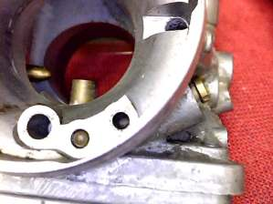
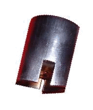

|
 they shall give account thereof in the day of judgment." Matthew 12:36 ¶ Idle words seem to abound these days, especially in Government circles. I think they all are in for a big fatal surprise. Lots of Idle words are spoken about Carburetors too. People say just change this jet or that jet and boom, you get lots more horsepower and 100 miles per gallon. People believe this because there are so many different Jets available. In addition they are relatively cheap and easy to get to so people figure, "Why Not Change something." Motorcycle Factories spend many hours and lots of money to get the carburetion just right. Then "We the People" come along and try to make things better. We usually end up with a bike that does not run as good as it did before we started. However, not always. We should leave well enough alone but you are going to do it anyway, aren't you? In an effort to help you do this, and avoid that surprise, I will now bloviate about the different circuits in the Carburetor. I will cover Mechanical Slide Carburetors first. We will start with Idle Circuits. The Idle Circuit controls the engine speed from Idle to about one quarter throttle. Humm, I guess that covers it... or maybe not! Things are a bit more complicated then what it might first seem. The Idle Circuit has an Idle jet, a screw that adjusts it and an idle stop screw of some kind to adjust the Engine Idle Speed. You set the Idle Adjuster Screw one and a half turns out from bottom. Then start the engine, let it get warm and adjust the Idle Speed with the Throttle Stop Screw till you get the lowest idle. Then turn the Idle Adjuster Screw in or out till you get the best idle. Then do it all again until you get the smoothest Idle at the idle speed you want.
As you can see above, there is a small Idle Port in the throat of the Carburetor. This port is controlled by the Idle Adjuster Screw. As the throttle opens, The Throttle Slide uncovers another Idle Port. This second port has a straight shot from the Idle Jet to the throat of the Carburetor. This helps smooth the transition to the next Carburetor Circuit. Most Throttle Slide Carburetors have these two ports. Some Carburetors have three Idle Ports. I have only seen three ports on Constant Velocity type Carburetors. Most Idle Jets Screw in to the Carburetor. Unfortunately, I'm starting to see Idle Jets that are pressed in and are not replaceable in some of the newer Carburetors.
Now there are two ways the fuel mixture is mixed before it leaves the idle ports and goes into the engine. In the first and most common way, air is taken from the front, air cleaner side, of the carburetor. Sometimes called the Carburetor Bell. Then the air is mixed with the fuel from the Idle Jet. It then goes out through the idle port(s). In other words, the amount of air in the air/fuel mix is adjusted by the Idle Adjustment Screw. This type of Idle Adjustment is used on Carburetors that go on both Two-Stroke and Four-Stroke engines.
The second way is for fuel to be taken from the Idle Jet and channeled directly into the Idle Port, in front of the Carburetor Slide, on the engine side of the Carburetor. Here, the Idle Jet Adjuster Screw controls the amount of fuel that is introduced to the Carburetor Venturi. Some people have called Carburetors that use this type of Idle Jet adjustment "Four-Stroke Carburetors". While I have never seen a Two-Stroke engine use this type of Carburetor, I see no reason why you could not use one on a Two-Stroke.
The best Air/Fuel Ratio, for a motorcycle engine, is around 14.7 parts air to one part fuel. The adjuster screws reflect this. If you look at the Air Adjuster screw you will see it is a lot more gross than the Fuel Adjuster Screw which is a lot more precise. You probably will not need to change the Idle Jet much. If you do want to change the Idle Jet you are in luck. (????) There are dozens of Idle Jet sizes. You will need to change the Idle Jet to the desired size. Adjust the Idle Screw and set the idle speed. Then take a new or cleaned spark plug and put it in the engine. Run the engine at an idle long enough to color the plug. Don't overheat the engine. You want a good idle, a smooth transition past quarter throttle and good spark plug color. Don't like the color of the spark plug? Can't get it to idle good? Pick a different Idle Jet and do it all over again.

Copyright © 1999-2015 dansmc.com. All rights reserved. |